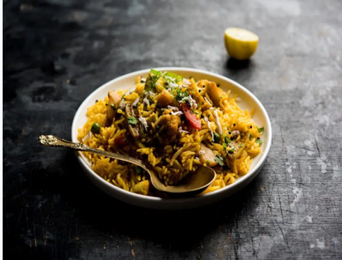
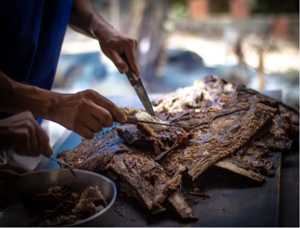

Região Sul
Historia
A culinária do sul do Brasil é uma das mais ricas e variadas do país, devido às diversas influências que
sofreu ao longo da história. O sul do Brasil foi colonizado pelos portugueses, espanhóis e italianos, o que
resultou em uma culinária rica em diversidade. Além dessas influências, a culinária sulista também foi afetada
pelos índios e africanos. Por fim, os europeus germânicos também contribuíram com a mistura e tudo isso se reflete
na comida típica da região, que é caracterizada por pratos saborosos e coloridos.
Arroz Carreteiro
">
- Arroz carreteiro é uma receita típica do sul do Brasil, que leva arroz, carne de charque, bacon e linguiça
calabresa.
Nasceu nos Pampas Gaúchos, é uma refeição bastante calórica e nutritiva, ideal para dias frios ou para quem
precisa de muita energia.
Costela Assada

- Quem nunca ouviu falar dos famosos costelões assados do sul do país? Pois é, essa tradição
dos pampas é possivelmente o primeiro prato que vem à cabeça quando se fala de comidas dessa região.
Tradicionalmente temperadas somente com sal, a carne de porco, boi ou carneiro vão para o espeto serem assadas
lentamente enquanto todos os sabores são mantidos preservados e assentuados.
Espeto Corrido

- O espeto corrido é o mais tradicional churrasco de rodízio que se espalhou pelo Brasil.
A carne é assada em espetos de madeira ou metal e servida sempre cortando a parte externa da peça que volta ao
fogo.
Hoje a gente encontra de tudo nos churrascos de espeto corrido, desde as carnes mais tradicionais como picanha,
maminha e cortes de porco a queijos e vegetais.
Mujica de Peixe

- Já que nós estamos falando de sopas e caldos, que tal provar também uma bela mujica de peixe? Essa deliciosa
sopa da região amazônica pode ser servida em diversos momentos da refeição, da entrada ao prato principal, e
carrega tradição e sabor.
A receita leva, na maioria das vezes, o peixe tambaqui depois de ser desfiado.
Para fazê-la, os nortistas utilizam as sobras do peixe que já foi utilizado em outro prato no dia anterior. Além
disso, acrescentam azeite, pimenta, farinha de mandioca e temperos para conseguir a cremosidade que é marca
registrada do caldo. Deu água na boca, né?
Lembre-se de consumir o prato em um local confiável ou prepará-lo sempre priorizando o momento de conservar os
alimentos, principalmente o peixe que vai ser reutilizado: a conservação adequada evita problemas de saúde e
desperdícios também.
Gurijuba

- Vai mais um peixinho aí? O peixe gurijuba é o mais consumido no Amapá e ganha destaque quando preparado ao
molho de tucupi que, aliás, foi eleito o melhor e mais vendido prato do Festival Brasil Sabor, realizado no
estado em 2021.
Outras receitas típicas, como a da moqueca, também utilizam o peixe, que é sempre muito bem temperado em todas
elas, assim como a maioria dos ingredientes de opções tradicionais da culinária nortista.
Costela de Tambaqui

- Nós já falamos um pouco sobre o tambaqui por aqui, mas ainda não dissemos a você que a costela do peixe é mais
uma parte super valorizada e imperdível para conhecer e experimentar!
Comum na Região Norte, a "costelinha de tambaqui", como é carinhosamente chamada, costuma ser servida frita e
até como um tipo de petisco de boteco. Para comer enquanto você conversa e se diverte com os amigos, por
exemplo.
Ela é sempre acompanhada de molho de pimenta, que dá aquele toque especial no sabor.